/41c6c6b363fd9170166a258405f96cc5.png) ist die Anzahl der Ausfallzeiten bei
ist die Anzahl der Ausfallzeiten bei Angenommen 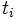. Es wird angenommen, dass die Ausfall- und Zensierungsmechanismen unabhängig voneinander sind. Die Hazardfunktion, 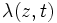
wobei 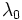 ein Vektor unbekannter Parameter und 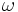 eindeutige Ausfallzeiten angeben, t(1) < t(2) < ? < t(nd) , so dass 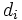 ausfallen, folgt, dass die marginale Likelihood für gut approximiert wird durch:
Änn 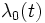 Strata variiert, wobei die Anzahl der Individuen im k-ten Stratum 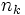, mit 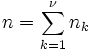 zu erhalten:
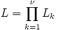 der Anteil der Likelihood für die .
Die Überlebensfunktion mit Basisline, die mit einer Ausfallzeit 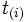 ,
wobei ist die Anzahl der Ausfallzeiten bei
wobei 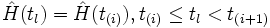 (Logarithmus der marginalen Likelihood). Es gibt zwei Möglichkeiten, um zu testen, ob individuelle Kovariate signifikant sind: Die Differenzen zwischen den Abweichungen der geschachtelten Modelle können mit der entsprechenden 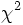![L=\prod_{i=1}^{n_d}\frac{\exp (s_i^{T}\beta +\omega _i)}{[\sum_{l\in R(t_{(1)})}\exp (z_i^{T}\beta +\omega _i)]^{d_{i}}}](../images/Algorithm_(phm_cox)/cc16c6f24fb58b700e403bda5a25280f.png) die Summe der Kovariate des Ausfalls von beobachteten Individuen bei der Satz von risikoreichen Individuen vor überlebenden Individuen. Die MLE (Schätzungen der maximalen Wahrscheinlichkeit) von 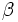, erhält man durch die Maximierung (1) mit einer Newton-Raphson-Iterationstechnik, die Stufen enthält und die erste und zweite partielle Ableitung von (1) verwendet, die gegeben sind durch (2) und (3) unten:
die Summe der Kovariate des Ausfalls von beobachteten Individuen bei der Satz von risikoreichen Individuen vor überlebenden Individuen. Die MLE (Schätzungen der maximalen Wahrscheinlichkeit) von 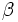, erhält man durch die Maximierung (1) mit einer Newton-Raphson-Iterationstechnik, die Stufen enthält und die erste und zweite partielle Ableitung von (1) verwendet, die gegeben sind durch (2) und (3) unten:
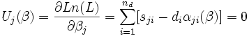 das j-te Element in dem Vektor 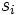hlich ist
/9a1b0fc27f72058403cfec20c510d39d.png) h, j = 1, ? p
h, j = 1, ? p
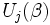 des (h, j) Elements der beobachteten Informationsmatrix 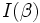 die Varianz-Kovarianzmatrix von unendlich sind.